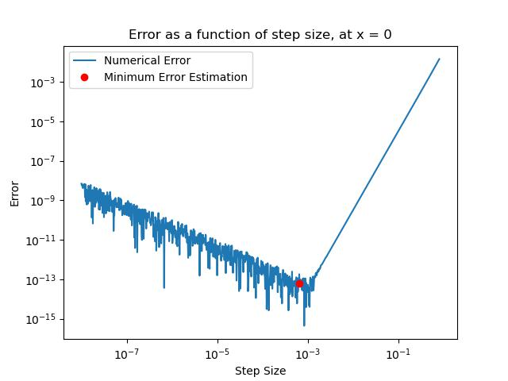

By Christian Mauffette Denis
For PHYS-512
We want to compute the derivative using the given 4 points. We know that
$$f(x + \delta) = f(x) + f'(x) \delta + \frac{f''(x)}{2}\delta^2 + \frac{f'''(x)}{6}\delta^3 + \frac{f^{(4)}(x)}{24}\delta^4 + \frac{f^{(5)}(x)}{120}\delta^5 + ... $$
$$f(x - \delta) = f(x) - f'(x) + \frac{f''(x)}{2}\delta^2 - \frac{f'''(x)}{6}\delta^3 + \frac{f^{(4)}(x)}{24}\delta^4 - \frac{f^{(5)}(x)}{120}\delta^5 + ... $$
$$f(x + 2\delta) = f(x) + 2 f'(x) \delta + \frac{4 f''(x)}{2}\delta^2 + \frac{8 f'''(x)}{6}\delta^3 + \frac{16 f^{(4)}(x)}{24}\delta^4 + \frac{32 f^{(5)}(x)}{120}\delta^5 + ... $$
$$f(x - 2\delta) = f(x) - 2 f'(x) \delta + \frac{4 f''(x)}{2}\delta^2 - \frac{8 f'''(x)}{6}\delta^3 + \frac{16 f^{(4)}(x)}{24}\delta^4 - \frac{32 f^{(5)}(x)}{120}\delta^5 + ... $$
If we subtract the first two expression we get:
$$f(x + \delta) - f(x - \delta) = 2 f'(x) \delta + \frac{ 2 f'''(x)}{6}\delta^3 + \frac{2 f^{(5)}(x)}{120}\delta^5 + ... $$
$$ = 2 f'(x) \delta + \frac{ f'''(x)}{3}\delta^3 + \frac{ f^{(5)}(x)}{60}\delta^5 + ... $$
Now we subtract the two last expressions:
$$ f(x + 2\delta) - f(x - 2\delta) = 4 f'(x) \delta + \frac{8 f'''(x)}{3}\delta^3 + \frac{8 f^{(5)}(x)}{15}\delta^5 + ... $$
This means we can get rid of the 3rd order corrections by doing:
$$\frac{2}{3} \left((f(x + \delta)-f(x-\delta ))-\frac{1}{8} (f(x + 2 \delta)-f(x-2 \delta ))\right) = f'(x)\delta -\frac{1}{30} f^{(5)}(x) \delta^5 + O\left(x^6\right)$$
Hence the error term is
$$\frac{1}{30} f^{(5)}(x) \delta^4$$
And the estimate will be
$$\frac{2}{3 \delta} \left((f(x + \delta)-f(x-\delta ))-\frac{1}{8} (f(x + 2 \delta)-f(x-2 \delta ))\right)$$
If the roundoff error is $\epsilon$, then the error is bounded by
$$\frac{2}{3 \delta} \left(\epsilon-(-\epsilon)-\frac{1}{8} ((-\epsilon)-\epsilon)\right) + \frac{1}{30} f^{(5)}(x) \delta^4 = \text{error}$$
$$\frac{2}{3 \delta} \left(2 \epsilon-\frac{\epsilon}{4} \right) + \frac{1}{30} f^{(5)}(x) \delta^4 = \text{error}$$
$$ \frac{7\epsilon}{6 \delta} + \frac{1}{30} f^{(5)}(x) \delta^4 = \text{error}$$
Taking the derivative with respect to $\delta$ and setting it equal to 0 to minimize it we have:
$$ \frac{d}{d\delta} \left( \frac{7\epsilon}{6 \delta} + \frac{1}{30} f^{(5)}(x) \delta^4 \right) = 0 $$
$$\frac{2 \delta ^3 k}{15}-\frac{7 \epsilon }{6 \delta ^2} = 0 $$
$$\implies \delta \approx \left( \frac{35 \epsilon}{4 f^{(5)}(x) } \right)^{1/5} $$
So, assuming machine precision is about $10^{-16}$, then we have about
$$\delta \approx 10^{-16/5} \approx 10^{-3.2}$$
We can now try this with code by evaluating the given functions with our derivative. First we create the derivative taking function.
# Function to take the derivative at some point with a given step size
def deriv(func, x0, delta):
return 2/(3*delta) * (func(x0 + delta) - func(x0 - delta) - 1/8*(func(x0 + 2*delta) - func(x0 - 2*delta)))
With this function, we can pick a x0 and then scan (logarithmically) through different delta values. For the function $e^{x}$ whose derivative is evaluated at $x=0$, this produces the following plot:

We can see on it the estimated optimal error is indeed in the $10^{-3}$ ballpark. Also, it was assumed that the fifth derivative is roughly of order 1, which is exactly right for our specific function, since $\frac{d^5}{dx^5} e^x = e^x$.
Now we can try the same procedure, but for the $e^{0.01 x}$ function. Again, we scan the different deltas, and produce the following plot:
For this plot the order of magnitude of the 5th derivative was in fact significant since $\frac{d^5}{dx^5} e^x = (0.01)^5e^x$. Hence, the optimal step size had to be divided by $0.01$ and after doing so, we see that it does indeed fall roughly on the minimum of the curve for the error.
We now code a derivative taking function. We used the centered derivative for that. We simply use the formula
$$\frac{f(x+\Delta x)-f(x - \Delta x)}{2 \Delta x} = f'(x)$$
However, we must pick the appropriate $\Delta x$. If we look at the Taylor expansion of the previous expression, we have
$$f(x + \delta) = f(x) + f'(x) \delta + \frac{f''(x)}{2}\delta^2 + \frac{f'''(x)}{6}\delta^3 + \frac{f^{(4)}(x)}{24}\delta^4 + \frac{f^{(5)}(x)}{120}\delta^5 + ... $$
$$f(x - \delta) = f(x) - f'(x) + \frac{f''(x)}{2}\delta^2 - \frac{f'''(x)}{6}\delta^3 + \frac{f^{(4)}(x)}{24}\delta^4 - \frac{f^{(5)}(x)}{120}\delta^5 + ... $$
$$\implies \frac{f(x+\Delta x)-f(x - \Delta x)}{2 \Delta x} = \frac{1}{2 \Delta x}\left( 2 f'(x) \Delta x + \frac{f'''(x)}{3}\Delta x^3\right) + ...$$
$$ = f'(x) + \frac{f'''(x)}{6}\Delta x^2 + ...$$
Hence, the error is
$$\text{error} \approx \frac{\epsilon}{\Delta x} + \frac{f'''(x)}{6}\Delta x^2$$
If we minimize it with respect to $\Delta x$, we have
$$\Delta x \approx \left(\frac{3 \epsilon}{f'''(x)} \right)^{1/3}$$
We will code a function that will find the 3rd derivative with a delta value that is not optimal and then use that derivative to find the first derivative, but this time with a delta that is quite optimal. I am assuming that the error will be relatively small in the 3rd derivative, hence, it should not be too much of a problem since it's only used to roughly find the optimal value for the derivative.
We still need to find some delta to use that is not too far-fetched for the three consecutive derivatives. In class we have seen that to minimize the error for such a derivative prescription (central), we must use $\Delta x \approx 10^{-5}$, assuming second derivatives are not too crazy and that our machine $\epsilon$ is $\approx 10^{-16}$.
def ndiff(fun, x, full = False):
'''Function to take a derivate. Optional: can output the estimated error on the result.'''
ini_step = 10**-5 # Initial step size (for third derivative)
# Anonymous function to take derivatives
diff_op = lambda func, x: (func(x + ini_step) - func(x - ini_step))/(2*ini_step)
deriv_1 = lambda x: diff_op(fun, x) # Calculating the first derivative
deriv_2 = lambda x: diff_op(deriv_1, x) # Calculating the second derivative
deriv_3 = lambda x: diff_op(deriv_1, x) # Calculating the thirs derivative
# Optimal step size
third_deriv = deriv_3(x)
print(third_deriv)
opt_step = (abs(3*np.finfo(float).eps/third_deriv))**(1/3)
# Finding the derivative
deriv = (fun(x + opt_step) - fun(x - opt_step))/(2*opt_step)
# Conditional system for optional argument
if full:
# Returns derivative and estimated error
est_err = np.finfo(float).eps/opt_step + third_deriv*opt_step**2/6
return np.array([deriv, est_err])
elif not full:
# Returns only derivative
return deriv
To answer this question we create the following function
def lakeshore(V, data):
'''Function to interpolate the data with a cubic spline'''
temperatures = np.array([i[0] for i in data[::-1]]) # Making array for temperatures (from raw data)
voltages = np.array([i[1] for i in data[::-1]]) # Making array for volatages (from raw data)
approx_vol_size = abs(voltages[2]-voltages[1])
# First we find the interpolation
cs = sci.interpolate.CubicSpline(voltages, temperatures) # spline function
inter_val = cs(V)
# Now we roughly estimate the error
lin_spline = sci.interpolate.interp1d(voltages, temperatures) # Linear interpolation
err_range = np.array(np.linspace(V-approx_vol_size, V+approx_vol_size, 1000))
approx_error = np.std(abs(lin_spline(err_range) - cs(err_range)), axis = 0)
return inter_val, approx_error
This function takes as input the value(s) we want to evaluate at an interpolated value and the raw data to create the interpolation. The function starts by extracting arrays for the temperature and the voltages from the raw data. From these $x$ and $y$ set of data, we are able to create the interpolation. To find the error on the obtained values, we create another interpolation, but this time linear. We look at the difference between the linear and the cubic splined interpolations to obtain a rough estimate for the error. This difference should give us roughly an order of magnitude estimate of the error. The rationale behinnd it is that the cubic spline can be "curvier" than the actual data, while the linear fit is often not curvy enough, hence the true value is hypothesized to fall within the two fit. This is where this substraction came from.
All this is down with arrays, so the function can work with both single value or arrays for V. It will return two elements, the first is either an array or single value for the interpolated value and the second is the rough estimate for the error (also as array or value).
The interpolation can be observed in the following plot:

We create three different interpolations for samples of the $\cos (x)$ function.
The first is a polynomial fit of degree $n-1$ where $n$ is the number of samples used. scipy's polyfit function was used for that.
The second interpolation scheme used was a cubic spine. Similarly to the polynomial fit, we used scipy's polyfit's interpolate.CubicSpline function.